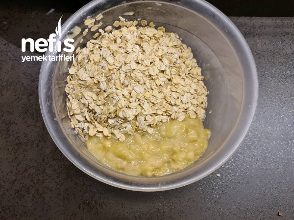
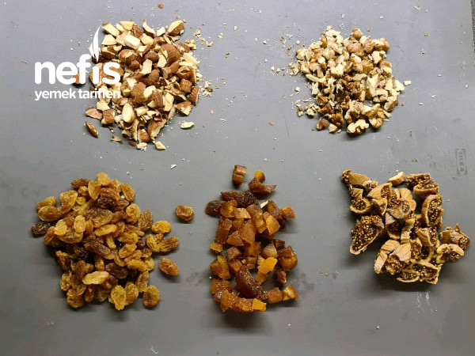
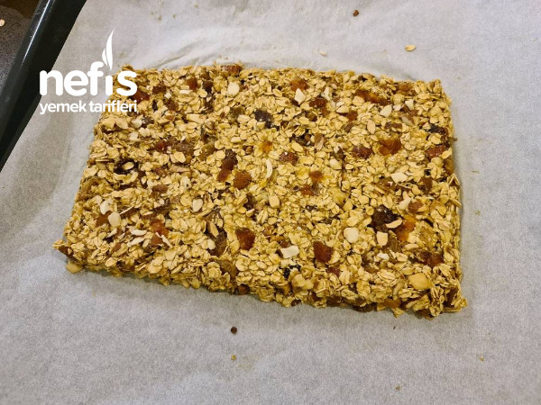
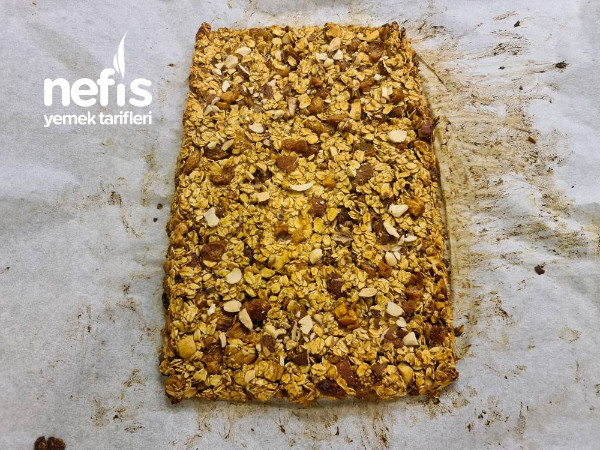
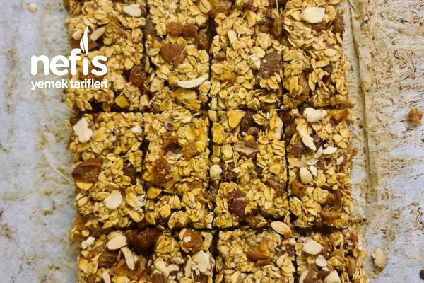
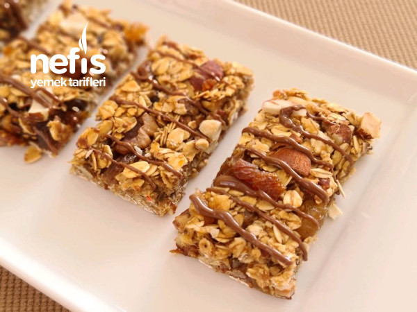

YULAFLI GRANOLA BAR
Markette gördüğümde mutlaka aldığım bir atıştırmalıktır. Bu tarif de onları hiç aratmadı. Kuruyemiş ve kuru meyveler zevkinize göre değiştirilir. Ben evde olanlarla karıştırdım. Pekmez ve bal olması tadının çok tatlı geleceği konusunda sizi yanıltmasın. Hatta biraz tatlı seviyorsanız bal miktarını artırabilirsiniz :)👍 kahve yanı için keyifli bir atıştırmalık 💗.
Tarif: Enes Salih Gökçek
Kaç Kişilik:2 Kişilik
Hazırlama Süreci: 30 dakika
Pişirme Süresi:30 dakika
Yulaflı Granola İçin Gerekli Malzemeler
- 2 su bardağı yulaf
- 2 adet orta boy olgunlaşmış muz
- 1 avuç badem
- 1 avuç ceviz
- 1 avuç kuru üzüm
- 2 adet kuru incir
- 2 adet kuru kayısı
- 2 yemek kaşığı pekmez
- 1 yemek kaşığı bal
Yulaflı Granola Bar Tarifi Nasıl Yapılır?
- Muzlar çatalla iyice ezilir.
- Yulaf eklenir
- Bıçakla iri doğranmış kuruyemiş ve meyveler eklenir.
- Bal ve pekmez de eklenir güzelce karıştırılır.
- Yağlı kağıt serili tepside şekillendirilir. Fazla kalın olmamalı.
- 180 derece ısıtılmış fırında yaklaşık 25-30 dk pişirilir.
- Ben son 10 dakikada altınında güzel pişmesi için tepsiyi en alt rafa koydum.
- Fırından çıkarınca istenilen şekilde kesilir ve soğumaya bırakılır.
Not: Soğudukça yapısı toparlanıyor.

AFİYET OLSUN :)